在进行轻重、大小、多少、长短、厚薄、高矮等各种量的比较时，通常有两种方法：一种就是将两种物体直接比较，直接得出结论；还有一种就是借助某种工具来比较，如比较轻重，可以使用天平，在后面讲到的量的推理里会涉及此类方法，再如比较长短，可以借助方格，可以借助直尺，等等。这一讲中我们不涉及直接比较的问题，而是希望通过借助某种工具的量的比较的讲解，帮助孩子建立基本的测量思想。从更深层次的角度看，借助方格或者其他工具来解决长度、面积的测量问题，实际上是把大的面积和长的长度划分成了多个小的面积和短的长度，这里又体现了一种守恒的数学思想，以及高等数学里的微积分的思想。
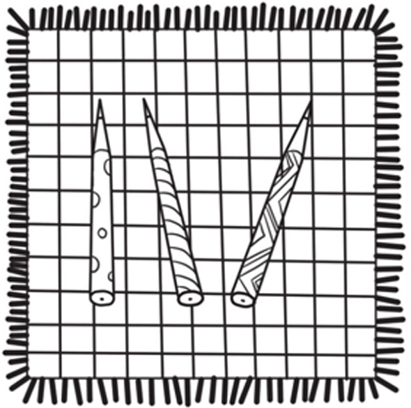
典型例题 1 仔细观察下图，看看哪支毛笔更长？
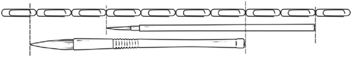
从上面的图可以看出，我们可以通过数曲别针的数量来判断哪支毛笔更长，曲别针数量更多的毛笔就更长。
上面的毛笔长度等于6个曲别针长，下面的毛笔长度大于6个曲别针长，根据量的推理，可知下面的毛笔比上面的毛笔长。
典型例题 2 根据下图所示路线，你能知道哪只小兔子最先吃到萝卜，哪只小兔子最后吃到萝卜吗？小兔子走得一样快。
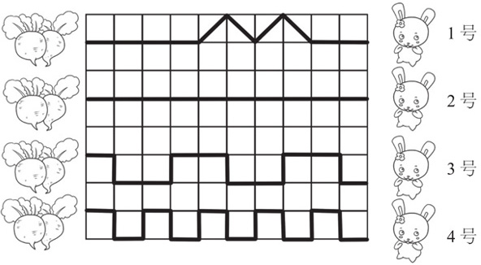
由于小兔子走得一样快，所以谁走的路线最长，谁就最后吃到萝卜；谁走的路线最短，谁就最先吃到萝卜。根据小兔子在方格中走的路线，可以把路线划分为两种：一种是格子的边长，另一种是格子中的斜线。
1号兔子一共走了6条格子边长和4条格子斜线。
2号兔子一共走了10条格子边长。
3号兔子一共走了15条格子边长。
4号兔子一共走了19条格子边长。
2号、3号和4号兔子走的路线的长度很容易比较，2号兔子的路线长度最短，4号兔子的路线长度最长。
比较2号兔子和1号兔子的路线。把2号兔子的路线拆分，2号兔子走了6条格子边长和4条格子边长，由于4条格子斜线的长度要大于4条格子边长，所以2号兔子走的路线是最短的。
比较4号兔子和1号兔子的路线。把4号兔子的路线拆分，4号兔子走了6条格子边长和13条格子边长，现在要比较4条格子斜线的长度和13条格子边长的长度。2条格子边长的长度大于1条格子斜线的长度，所以8条格子边长的长度大于4条格子斜线的长度，根据量的推理，13条格子边长的长度要大于4条格子斜线的长度，所以4号兔子的路线最长。
所以2号兔子最先吃到萝卜，4号兔子最后吃到萝卜。
上面的题目中涉及量的推理，以及孩子对于简单的路线长短的判断。由下图可知从A点到B点，1号路线的长度要短于2号路线的长度。
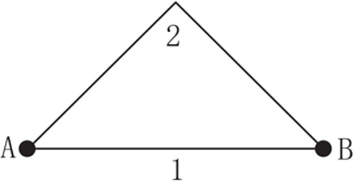
典型例题 3 4只小兔子都分到了一块地种胡萝卜，你知道哪只小兔子分得的土地最多，哪只小兔子分得的土地最少吗？土地的颜色和小兔子的颜色相同。
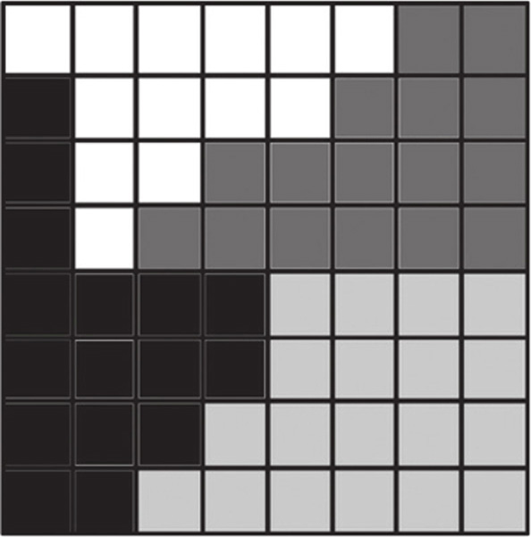
这道题用数方格的方法来解决，小方格可以作为一个基本的测量工具，方格数多则土地的面积大。白色兔子分得了13块小方格的土地；深灰色兔子分得了16块小方格的土地；黑色兔子分得了16块小方格的土地；浅灰色兔子分得了19块小方格的土地。所以浅灰色兔子分得的土地最多，白色兔子分得的土地最少。
典型例题 4 用3个同样容量的水壶分别往相同的杯子里倒水，杯子都倒满水了，水壶也空了，你能看出来哪个水壶原来装的水最多吗？
（1）
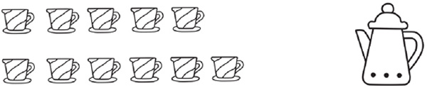
（2）
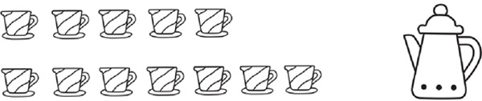
（3）
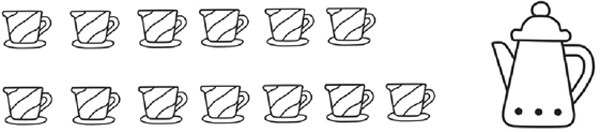
在本题中，水杯就是基本的测量工具，当水壶倒空的时候，哪个壶倒满水的杯数多，哪个壶原来装的水就多。
（1）号壶倒满了11杯水，（2）号壶倒满了12杯水，（3）号壶倒满了13杯水，所以（1）号壶原来装的水最少，（3）号壶原来装的水最多。
1.仔细观察下图，看看哪支钢笔更长？
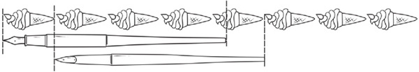
2.仔细观察下图，看看哪支铅笔更长？
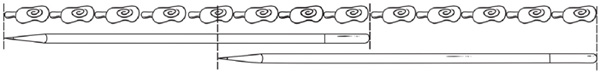
3.用3个奶油桶里的奶油制作相同的冰激凌，当奶油用完时，你知道哪个桶里原来的奶油最多吗？
（1）
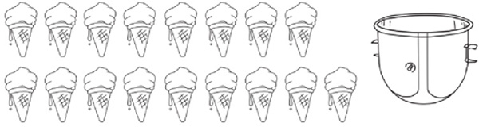
（2）
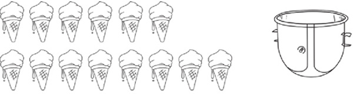
（3）
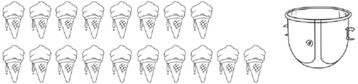
4.如果3只猫走得一样快，根据下图所示路线，你能知道哪只猫能够最先吃到鱼吗？
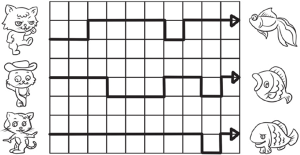
5.有3支铅笔放在画了格子的手帕上，你知道哪支铅笔最长吗？
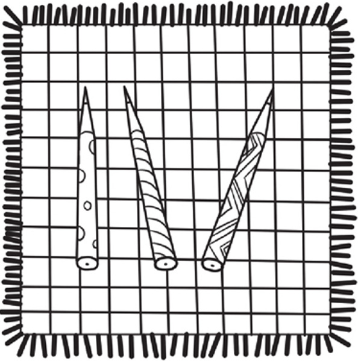
6.按照下图所示线路，如果3只蜗牛爬得一样快，哪只蜗牛最先到家呢？
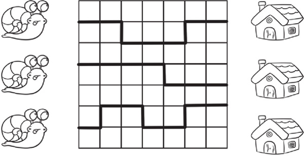
7.按下图所示路线，如果3只小狗跑得一样快，哪只小狗最先吃到骨头呢？
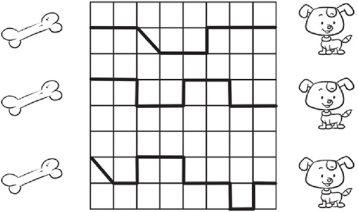
8.下面的3个图形，哪个图形所占的地方最大呢？
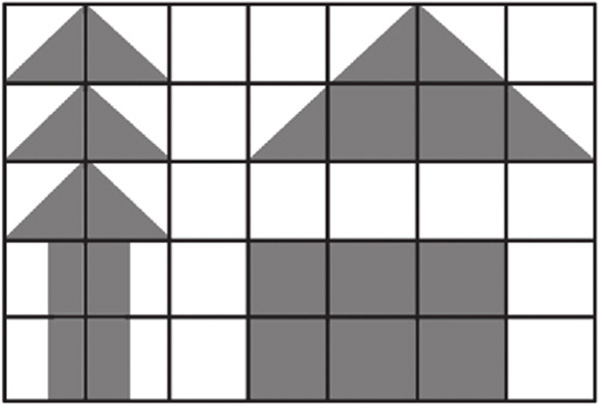
9.小朋友用同样厚度的积木搭了一座桥和一辆汽车，你觉得汽车能从桥底下过去吗？
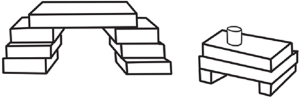